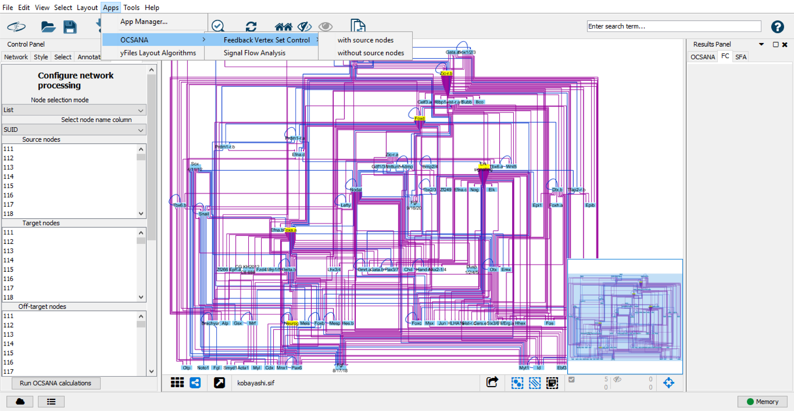
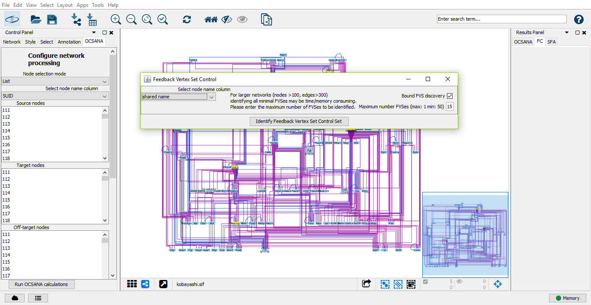
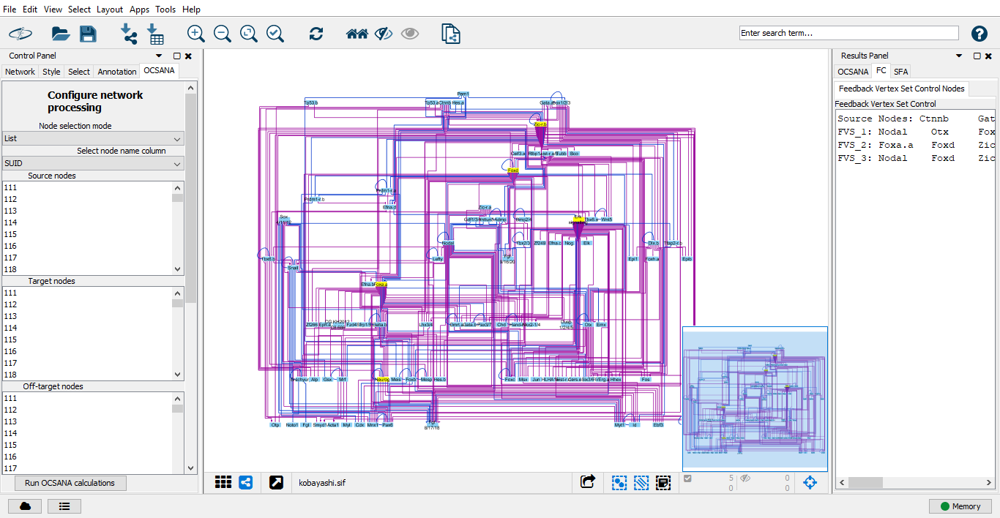

Identifying Minimal Feedback Vertex Set Control (FC) Sets¶
FeedbackVertex Set Control (FC) is an attractor based control method specifically developed for networks with non-linear dynamics that uses a component ofthe network’s topology, the Feedback Vertex Set (FVS) (Mochizuki et al., 2013)
Running FC in Cytoscape¶
After installation of OCSANA+ and loading of a network, you can select Feedback Vertex Set Control from the main toolbar>Apps>OCSANA
Configuring your FC Run¶
Two FC algorithms are implemented in OCSANA+. Mochizuki et al. (2013) mathematically identified the FC set to be comprised of the network’s minimal FVS. The FVS of a network is defined as the minimal set of nodes whose removal would leave a graph without cycles. Later, an extended FC control version adding the the network’s source nodes was been proposed by Zañudo et al. (2017).
You can choose either version to run in OCSANA+.
After selecting an FC option, a new pop-up menu will appear.
Select Node Name Column¶
This option allows users to select which column of the node attribute table will be used to identify network nodes.
Bound FVS discovery¶
For larger, more complex networks (those with many cycles), FVS discovery can be time/memory consuming. We suggest limiting the number of FVSs runs, with a maximum of 50. Please note that the number of FVSes returned may be less than the set boundary, as there may be fewer FVSes in the network.
After configuring your run, select “Identify Feedback Vertex Set Control Set”
FC Results¶
After the OCSANA run has completed, the results will be displayed in the OCSANA tabe of the Cytoscape Results Panel (right panel).
The results will include:
- Source Nodes: either the list of source nodes in the network, or “Source nodes not computed” depending on your run configuration
- FVS_i: results for each discovered FVS.